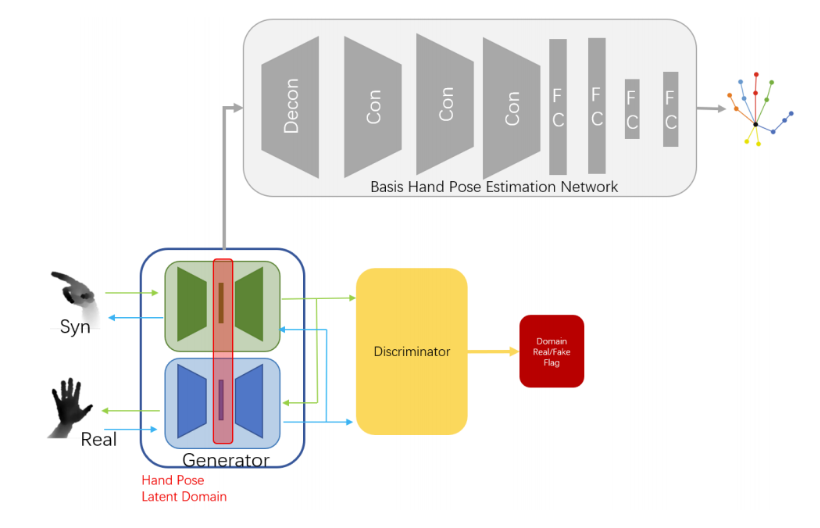
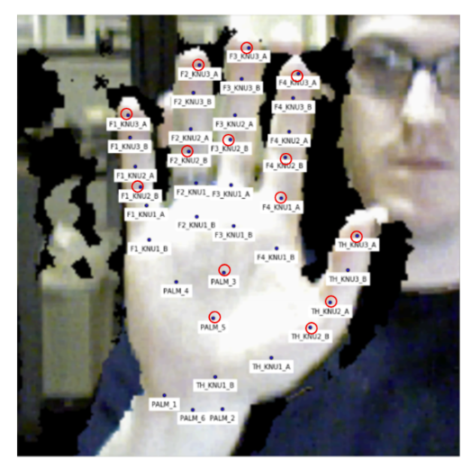
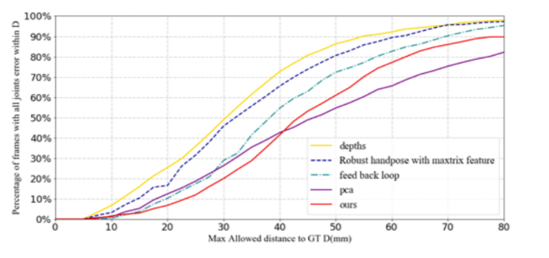

| Status: | MS Student |
| Program: | Computer Science and Engineering |
| School: | Tandon School of Engineering, New York University |
| RA Period: | From 2017-10 to 2018-06 |
| I was a research assistant in NYU Multimedia and Visual Computing Lab, advised by Professor Yi Fang. I am broadly interested in 3D Computer Vision and Deep Visual Learning. |
Most traditional hand pose estimations are semi-supervised learning methods that require a large number of manually labeled training samples. To save those expensive and time-consuming datasets, this paper proposes a novel method that replaces the real data with synthetic data by using the transformation between their latent domains. After finding a mapping ffrom the dataset to the low-latitude latent domain respectively for real and synthetic datasets respectively, a cycle generative adversarial network is used to implement the transformation between the domains. In this process, the requirement of a successful transformation necessitates the generator to complete the multitask learning, thereby generating an indistinguishable potential domain while ensuring that the domain.
Figure 1: Final End-to-End Hand Pose Estimation Pipeline.
In this project, we propose a new idea to solve the problem of limited and expensive humanlabeled datasets. The most prominent contribution is that the transformation is implemented on latent domain instead of images. Besides, the training of the generator responsible for domain transformation is multi-tasking in order to save storage space and achieve more fast convergence. This process is also beneficial in implementing an end-to-end training mode. This means that the training of hand pose estimation and domain transformation is carried out simultaneously. As displayed in Figure.1, there are two generators and discriminators.One is mainly responsible for converting synthetic data to real data, and the other one carries out the opposite function. Ds mainly distinguishes between synthetic images and translated images from real images; basically, it provides high scores within the true synthetic data, and vice verse. Even though we want to carry out latent domain transformation, it should be kept in mind during an end-to-end training that the primary purpose of a generator purpose is still to complete the translation of one image to another. A map for the features of a certain hidden layer from the generator is extracted as an output sample of the target latent domain, and this output is then fed into the following basic hand pose estimation network to predict a pose based on the input depth image.
Figure 2: NYU Hand Dataset.
In this section, we compare the result of this research with several mainstream methods and then points out the pros and cons of the approach of this research. Figure.2 showcases experiment results as compared to the findings achieved using several state-of-the-art methods. It can be seen that when the fault tolerance rate is very low, our performance is still good enough, but as the fault tolerance rate rises, we can only beat one method. I attribute this result to the synthetic image we generated. If the synthetic dataset is very different from the original data in probability distribution, despite the depth map has implemented domain transform, the pose is never changed, which will limit our method’s performance.
Figure 3: Comparing on NYU Dataset.